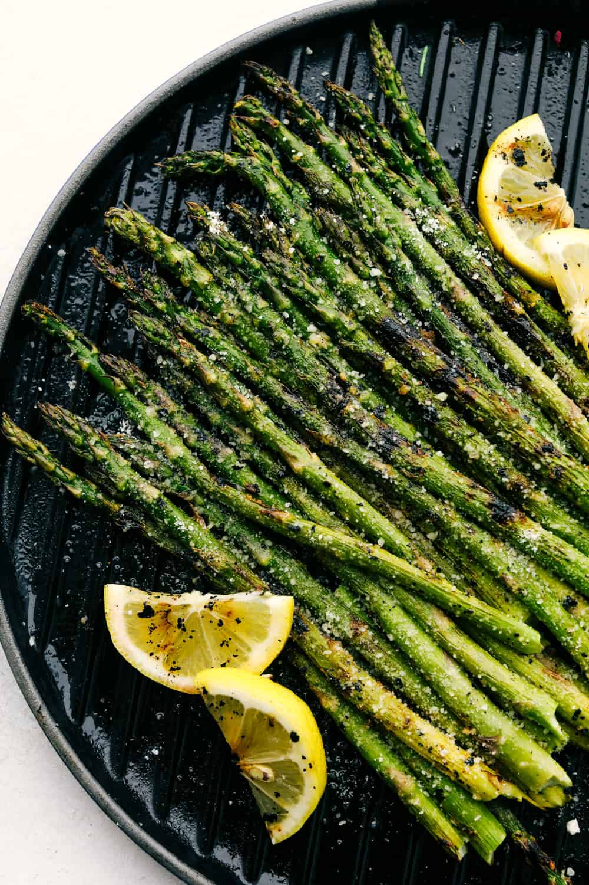

Asparagus Recipe
Grilled Asparagus

Searching for the best summer side dish that comes together in minutes?
Look no further than this easy grilled asparagus that’s tossed in olive oil, seasoned with salt and pepper, and grilled until perfectly tender.
This grilled asparagus will taste best the day it’s cooked. However, if you have leftovers, you can store them in an airtight container in the refrigerator for up to three days.
“Can’t mess up perfection,” according to Eric Ochieng. “Great results. Added some freshly grated cheese. Prior to final finishing in a hot skillet, I blanched the asparagus to maintain a bright green color that contrasted nicely with the light char on my veggies.”
Ingredients
- 1 pound fresh asparagus spears, trimmed
- 1 tablespoon olive oil
- salt and pepper to taste
Directions
- Preheat an outdoor grill for high heat and lightly oil the grate.
- Lightly coat the asparagus spears with olive oil. Season with salt and pepper to taste.
- Cook asparagus on the preheated grill, turning often until lightly charred and fork-tender about 3 to 5 minutes.